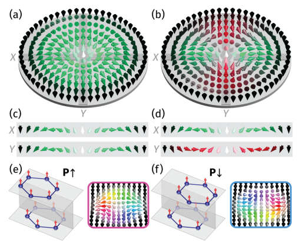
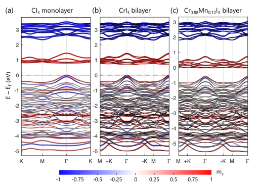

7月：注目論文と傾向のまとめ
二次元ファンデルワールス磁性体に関する論文が多かった記憶がある。その他、個人的に気になる論文をピックアップして紹介しています。
論文タイトル一覧
1. 層間スタッキングによって誘起される二次元ファンデルワールス磁性体中の反スキルミオン
・反スキルミオンは、空間的にねじれたスピン構造を持ち、非自明なトポロジーを示す磁気準粒子である。反スキルミオンは、通常、非対称なジャロシンスキー・守谷相互作用（DMI）が必要であるが、これは非常に稀な対称性を持つ結晶でしか観測されていない。
・二次元ファンデルワールス磁性体は、層間相互作用が弱く、層間スタッキングによって物性を制御できる新しい磁性材料である。特に、CrI3やMnI3などの遷移金属トリハライドは、層間スライドによって非対称なスタッキングパターンを形成し、電気分極を持つことができる。
・第一原理計算により、CrI3やMnI3などの二次元ファンデルワールス磁性体の電気分極層間スタッキングが反スキルミオンを実現する可能性が示された。電気分極層間スタッキングは、DMIを誘起し、その方向や大きさを電場によって制御できる。また、Mnドープによって磁気異方性を減少させることで、反スキルミオンのサイズや安定性を改善できることが分かった。
・原子スピンダイナミクスシミュレーションにより、Cr0.88Mn0.12I3電気分極層間スタッキング中に反スキルミオンが形成されることが予測された。さらに、電場によって電気分極を反転させることで、反スキルミオンのスピンテクスチャーも反転することが示された。これらの結果は、二次元ファンデルワールス磁性体中で反スキルミオンを生成し制御する新しい方法を開拓した。
・二次元ファンデルワールス磁性体は、層間相互作用が弱く、層間スタッキングによって物性を制御できる新しい磁性材料である。特に、CrI3やMnI3などの遷移金属トリハライドは、層間スライドによって非対称なスタッキングパターンを形成し、電気分極を持つことができる。
・第一原理計算により、CrI3やMnI3などの二次元ファンデルワールス磁性体の電気分極層間スタッキングが反スキルミオンを実現する可能性が示された。電気分極層間スタッキングは、DMIを誘起し、その方向や大きさを電場によって制御できる。また、Mnドープによって磁気異方性を減少させることで、反スキルミオンのサイズや安定性を改善できることが分かった。
・原子スピンダイナミクスシミュレーションにより、Cr0.88Mn0.12I3電気分極層間スタッキング中に反スキルミオンが形成されることが予測された。さらに、電場によって電気分極を反転させることで、反スキルミオンのスピンテクスチャーも反転することが示された。これらの結果は、二次元ファンデルワールス磁性体中で反スキルミオンを生成し制御する新しい方法を開拓した。
コメント：スキルミオンの制御は難しいイメージがあるが、層間スタッキングやMnドープという簡単な手法で反スキルミオンを実現している点は面白いと思う。
DATE: 28 Jul 2023
Magnetic Antiskyrmions in Two-Dimensional van der Waals Magnets Engineered by Layer Stacking
Kai Huang et al. (University of Nebraska, USA)
arXiv:2307.15769 (cond-mat.mtrl-sci)
Magnetic Antiskyrmions in Two-Dimensional van der Waals Magnets Engineered by Layer Stacking
Kai Huang et al. (University of Nebraska, USA)
arXiv:2307.15769 (cond-mat.mtrl-sci)

